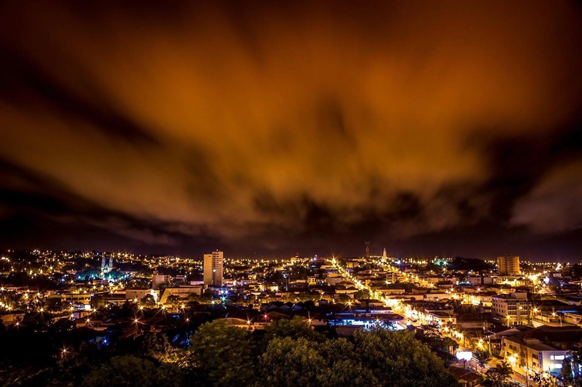
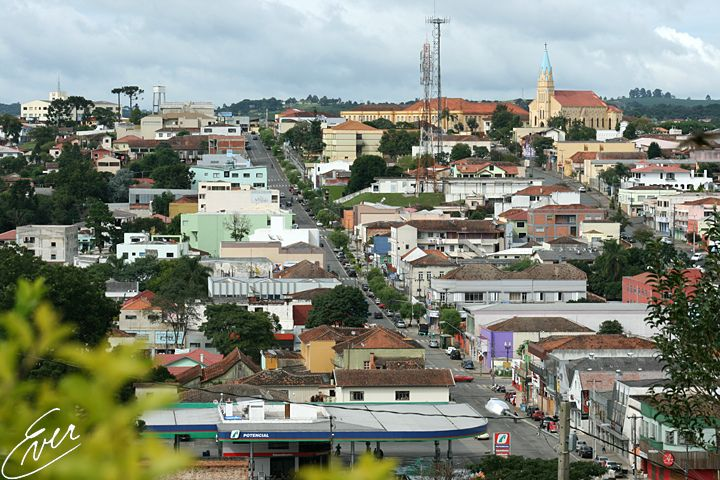
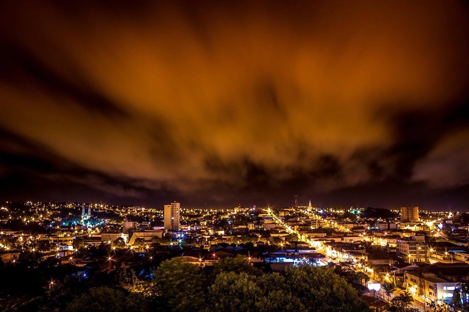
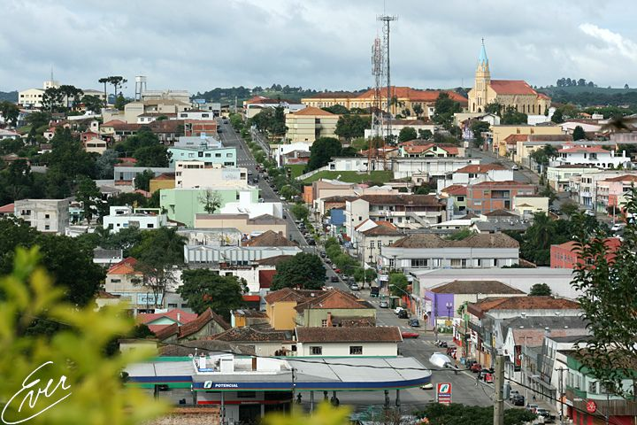

Irati é uma cidade do interior do Paraná,localizada no Sudeste do estado e situada a 155 km de Curitiba(capital do estado), atualmente possui aproximadamente 61.439 pessoas(senso IBGE).Seu espaço territorial é de aproximadamente 999,515 km², pegando tanto área urbana, quanto de zonas rurais e plantações.
 


